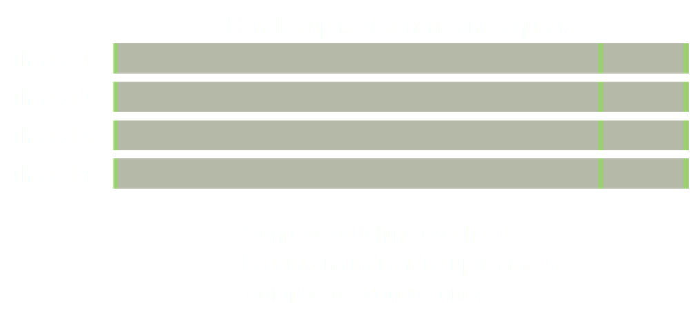

explained
Jeff Kunkle

Please connect to http://192.168.1.25:3000 using Chrome, Safari, or mobile Safari on iPad
1 Theory
2 Challenges
3 Benefits
4 Getting Smart
1 Theory
I/O Latency
| L1 | 3 cycles |
| L2 | 14 cycles |
| RAM | 250 cycles |
| Disk | 41,000,000 |
| Network | 240,000,000 |

I/O Latency
| L2 | RAM | Disk | Network | |
| L1 | 5 | 83 | 13,666,666 | 80,000,000 |
| L2 | 18 | 2,928,571 | 17,142,857 | |
| RAM | 164,000 | 960,000 | ||
| Disk | 6 |
Waiting...

Scale with Threads
Scale with Processes

Scale with Event Loop

Node.js Event Loop

Platform
Examples
setTimeout(function () {
console.log('This will still run.');
}, 500);
HTTP Server
var http = require('http');
http.createServer(function(req, res) {
res.writeHead(200, {'Content-Type': 'text/plain'});
res.end('Hello World\n');
}).listen(8124);
console.log('Running at 127.0.0.1:8124');
Serve a Static File
var http = require('http');
http.createServer(function (req, res) {
fs.readFile('/etc/passwd', function(err, data) {
if (err) {
res.writeHead(500, err.message);
res.end();
} else {
res.writeHead(200, {
'Content-Type': 'text/plain'
});
res.end(data);
}
});
}).listen(8124);
Read a File in Chunks
var fs = require('fs');
var stream = fs.createReadStream('huge.txt');
stream.on('data', function(data) {
console.log(data);
});
stream.on('end', function() {
console.log('done');
});
stream.on('error', function(err) {
console.log(err);
});
2 Challenges
Asynchronous I/O
var fs = require('fs');
fs.stat('/etc/passwd', function(err, stats) {
if (err) return;
if (stats.isFile()) {
fs.readFile('/etc/passwd', function(err, data) {
if (err) throw err;
console.log(data);
});
}
});
Debugging
CPU-intensive Tasks
1 thread
be careful!
Rapidly Changing
| v0.6.12 2012.03.02 | v0.7.5 2012.02.23 |
| v0.6.11 2012.02.17 | v0.7.4 2012.02.14 |
| v0.6.10 2012.02.02 | v0.7.3 2012.02.07 |
| v0.6.9 2012.01.27 | v0.7.2 2012.02.01 |
| v0.6.8 2012.01.19 | v0.7.1 2012.01.23 |
| v0.6.7 2012.01.06 | v0.7.0 2012.01.16 |
3 Benefits
Multi-Platform
Lightweight
single thread
Dead-lock Free
single thread simplifies concurrency
Monoglot Programming
JavaScript on the client
JavaScript on the server
Fast
Conceptually Simple
Small Core
36 JavaScript source files
36 C++ source files
Short Learning Curve
Understand Node.js Theory
Understand JavaScript
Understand Evented Programming
You just need to learn new APIs
4 Getting Smart
1 install Node from source
2 write some small programs
3 read the source
4 re-implement a popular pkg
Packages to Try
| express web framework |
async async helpers |
| persist ORM framework |
socket.io realtime networking |
| db-migrate database migrations |
vows BDD framework |
| dnode RPC |
java bridge to Java API |